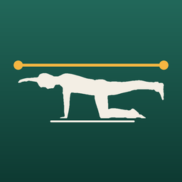
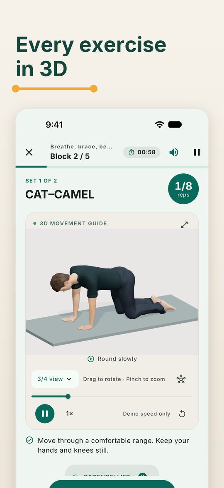
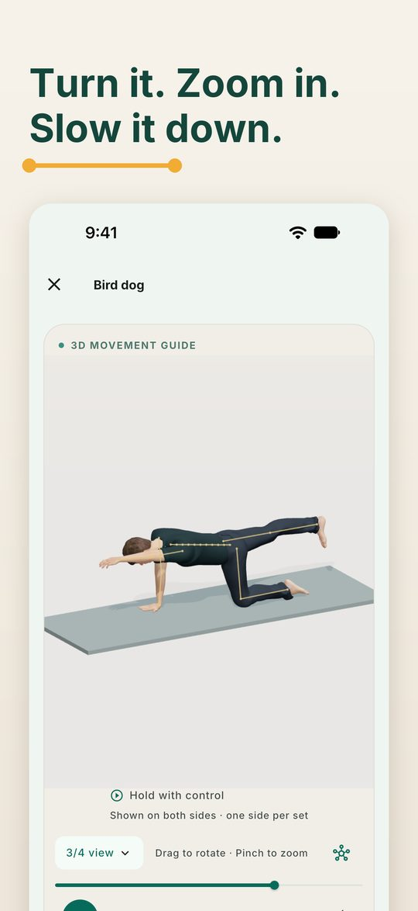
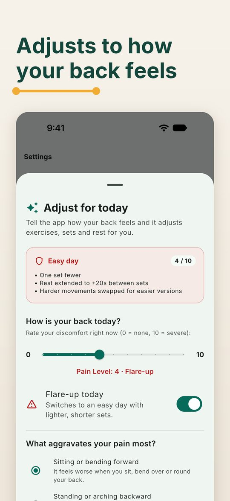
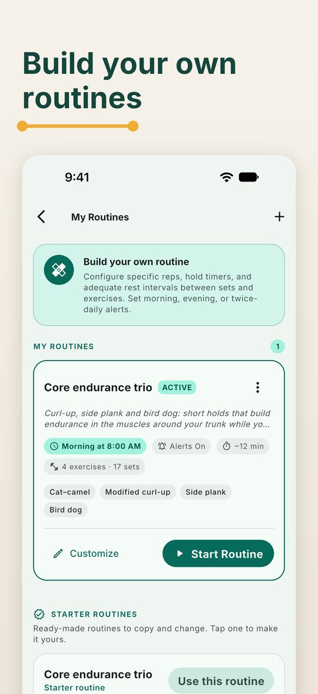

3D back and core training for iPhone and iPad
Every exercise comes with a 3D model you can turn, zoom and slow down. Three 30-day programmes, routines you build yourself, and a mobility check every ten days.
Requires iOS or iPadOS 15 or later. Day 1 of the Beginner programme is free.




All 47 exercises have their own 3D demonstration. Turn it, zoom in, switch views, slow it down or pause it. On a device that can't run the 3D model, Backform shows 2D illustrations instead.
Beginner, Intermediate and Advanced. Each day lists its exercises, sets, holds, reps and rests, and the rule behind each number.
Rate your back and pick the movements that bother you. The session swaps those for easier versions, trims sets and adds rest. A flare-up day becomes an easy day.
Build a routine from the exercise library with your own reps, holds and rests, and get a morning or evening reminder. Or start from a ready-made routine.
A one-minute mobility check at the start and on days 10, 20 and 30, your ratings after each session, a streak and a 30-day calendar.
No account and no ads. Your entries stay on your device, and sessions, timers and the 3D models work without an internet connection.
Day 1 of the Beginner programme is free. Backform Pro unlocks every day of all three programmes and the full progress reports. Choose monthly or yearly, each with a 7-day free trial for new subscribers, or a one-time Lifetime purchase. Prices are shown in the app in your currency.
Sign in with the same Apple Account, open Backform, and tap Settings › Restore purchases.
On iPhone or iPad, open the Settings app, tap your name, then Subscriptions, and choose Backform Pro. While Pro is on, Backform's own Settings also has a Manage subscription link. Cancel at least 24 hours before the renewal date to avoid the next charge.
Everything you enter stays on your device; Backform has no account and no server. Settings › Reset my progress clears sessions, streaks and check-ins. Deleting the app deletes everything. See the privacy policy.
Check that notifications are allowed for Backform in the Settings app, and that Daily reminder is on in Backform's Settings. The reminder is skipped on days you have already trained.
Choose Settings › Session sound: Voice, Chimes or Off. You can also turn off rep pacing and the countdown vibration there.
Backform is exercise education, not medical advice or treatment. Check with a doctor or physiotherapist before you start if your back pain is severe, getting worse, or travels down a leg. Stop and get urgent help for new bladder or bowel problems, numbness around the groin, or weakness or numbness in both legs.
Email wekstuff@gmail.com with your question. It helps to include your device model and iOS version, and what you were doing when the problem happened.